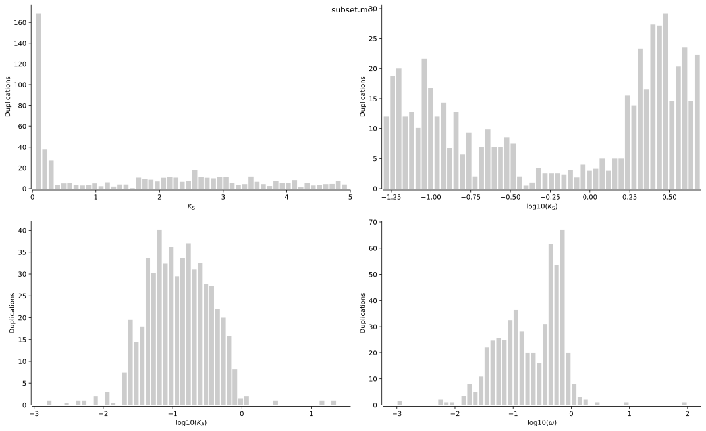

wgdAlready back in 2017, I wrote a python library for computing so-called \(K_\mathrm{S}\)[1] distributions. The goal was to provide an easy and robust pipeline to do exactly that, and it seems some people are in fact using it. It is not very actively maintained (and I wish I'd find the time to finish a complete rewrite, register the package and rewrite documentation) but it does the job nicely and efficiently. Here I'll show how I generally use the library in my research.
First, installation. I have used wgd with Python3.5+ (3.5, 3.6, 3.7 and 3.8). I generally recommend to use a virtual environment for wgd, that way you won't have dependency issues or clashes. The following should suffice to install the wgd package in a Ubuntu-ish Linux environment.
sudo apt-get install python3-pip
pip3 install virtualenv --user
virtualenv venv -p python3
source venv/bin/activate
git clone https://github.com/arzwa/wgd.git
cd wgd
pip3 install .If all went well, you should try running wgd
(venv) $ wgd
Usage: wgd [OPTIONS] COMMAND [ARGS]...
Welcome to the wgd command line interface!
_______
\ ___ `'.
_ _ .--./) ' |--.\ \
/\ \\ ///.''\\ | | \ '
`\\ //\\ //| | | | | | | '
\`// \'/ \`-' / | | | |
\| |/ /("'` | | ' .'
' \ '---. | |___.' /'
/'""'.\ /_______.'/
|| ||\_______|/
\'. __//
`'---'
wgd Copyright (C) 2018 Arthur Zwaenepoel
This program comes with ABSOLUTELY NO WARRANTY;
This is free software, and you are welcome to redistribute it
under certain conditions;
Contact: arzwa@psb.vib-ugent.be
Options:
-v, --verbosity [info|debug] Verbosity level, default = info.
-l, --logfile TEXT File to write logs to (optional)
--version Print version number
-h, --help Show this message and exit.
Commands:
dmd All-vs.-all diamond blastp + MCL clustering.
kde Fit a KDE to a Ks distribution.
ksd Ks distribution construction.
mcl All-vs.-all blastp + MCL clustering.
mix Mixture modeling of Ks distributions.
pre Check and optionally rename CDS files Example usage (renaming) wgd...
syn Co-linearity analyses.
viz Plot histograms/densities (interactively).
wf1 Standard workflow whole paranome Ks.
wf2 Standard workflow one-vs-one ortholog Ks.Some third-party tools are required to run the example below. Specifically we will use diamond, mcl, mafft, codeml and fasttree.
The basic input data is a bunch of CDS sequences. Here I'll use the CDS data available for the sunfih (Mola mola). To dowload it from ensembl:
wget ftp://ftp.ensembl.org/pub/release-99/fasta/mola_mola/cds/Mola_mola.ASM169857v1.cds.all.fa.gz
gunzip Mola*gz
mv Mola*fa mola.cds.fastaThere is a little tool in wgd to quickly check the input data. Since \(K_\mathrm{S}\) is a codon-model based evolutionary distance, it is absolutely crucial that the input data are proper codon-sequences. If you're paranoid about this being the case, you can use wgd pre to partition a fasta file in everything that is nicely translatable from start to stop codon and all the rest.
wgd pre mola.cds.fastaThis will spit a lot to the screen:
2020-03-01 15:32:20: ERROR Translation error (First codon 'GAC' is not a start codon) in sequence ENSMMOT00000029500.1
2020-03-01 15:32:20: ERROR Translation error (First codon 'TGT' is not a start codon) in sequence ENSMMOT00000029501.1
2020-03-01 15:32:20: ERROR Translation error (First codon 'GCC' is not a start codon) in sequence ENSMMOT00000029502.1
2020-03-01 15:32:20: INFO 20956/29015 (72.22%) sequences are perfect CDS (in mola.cds.fasta.pre.good)
2020-03-01 15:32:20: INFO 8059/29015 (27.78%) sequences are not perfect CDS (in mola.cds.fasta.pre.bad)About 3/4 of the input data is textbook CDS sequence. The rest has some issue, and is written to the .bad file. Of course, not all CDS sequences start with a start codon, and if you trust your data, you should definitely not throw those away! (you should, however, not trust any sequence with a length that is no multiple of three!). Here I'll continue working with the 'proper' CDS data, now in the file mola.cds.fasta.pre.good.
Note: wgd pre can also be used to rename your sequences. If you have the kind of fasta files with very long and awkward headers, I would recommend this, as it will make files obtained later clearer. See the --rename and --prefix options.
The first step is to obtain the paranome, or the collection of all paralogous genes. This is esentially a big graph, where the nodes are all genes in the genome, and edges represent homology (paralogy) relationships. Of course, in the absence of different genomes to compare to, homology is no well-defined concept, as we may as well assume all genes trace back to a common ancestor and are thus homologous. The goal of paranome inference is of course not to lump everything together, but simply to cluster the genome in reasonably fine-grained paralogous gene families. Ideally, we'd like to obtain paralogous gene families with a most recent common ancestor (MRCA) that is within the time frame where \(K_\mathrm{S}\) can be reliably estimated, providing us a clue as to what reasonably fine-grained could mean.
In general, common gene family clustering methods using Markov graph clustering (MCL) work well for this task. In wgd an approach based on all-vs.-all protein similarity searches and MCL clustering is implemented. Both blastp, and the much faster diamond are supported. The following will run diamond + mcl to obtain the paranome:
wgd dmd mola.cds.fasta.pre.goodIf one wishes to use the full data (not only the textbook-CDS sequences), the --nostrictcds and --ignorestop options can be used. Other parameters of interest are the \(e\)-value threshold used to construct the sequence-similarity graph and the inflation factor for MCL, governing the coarseness of the inferred clusters. To see all options for wgd dmd run wgd dmd --help.
If we started from an empty directory, by now we should have obtained the following (using the non-default tree command in Linux):
$ tree
.
├── mola.cds.fasta
├── mola.cds.fasta.pre.bad
├── mola.cds.fasta.pre.good
└── wgd_dmd
└── mola.cds.fasta.pre.good.mclThe paranome consists of how many families?
$ wc -l wgd_dmd/mola.cds.fasta.pre.good.mcl
3721 wgd_dmd/mola.cds.fasta.pre.good.mclTo compute the \(K_\mathrm{S}\) distribution, we'll perform multiple sequence alignment with MAFFT, maximum likelihood estimation of codon substitution model parameters using codeml and do approximate phylogenetic tree inference using FastTree.
Since this takes quite a bit of time (codeml performs a rather expensive numerical optimization step), I will take a subset here for illustrative purposes. I'll skip a lot of the larger families and take a random sample of 1000 families from the remaining paralog clusters.
tail -n 2500 wgd_dmd/mola*mcl | shuf | head -n 1000 > wgd_dmd/subset.mclIf you have the required tools installed, you should be able to run the following:
wgd ksd ./wgd_dmd/subset.mcl ./mola.cds.fasta.pre.goodThis will run the analysis in parallel on four CPU cores. It starts with the biggest families (which take more time). We can monitor the analysis in the terminal, with output that looks like this.
$ wgd ksd ./wgd_dmd/subset.mcl ./mola.cds.fasta.pre.good
2020-03-01 16:01:49: INFO codeml found
2020-03-01 16:01:49: INFO Translating CDS file
Invalid codon GCN in ENSMMOT00000000017.1
Invalid codon CNN in ENSMMOT00000000033.1
[...]
100% (20957 of 20957) |#################################################################| Elapsed Time: 0:00:08 Time: 0:00:08
2020-03-01 16:01:57: WARNING There were 841 warnings during translation
2020-03-01 16:01:57: INFO Started whole paranome Ks analysis
2020-03-01 16:01:57: WARNING Filtered out the 0 largest gene families because n*(n-1)/2 > `max_pairwise`
2020-03-01 16:01:57: WARNING If you want to analyse these large families anyhow, please raise the `max_pairwise` parameter.
2020-03-01 16:01:57: INFO Started analysis in parallel (n_threads = 4)
2020-03-01 17:04:01: INFO Performing analysis on gene family GF_000024
2020-03-01 17:04:01: INFO Performing analysis on gene family GF_000047
2020-03-01 17:04:01: INFO Performing analysis on gene family GF_000049
2020-03-01 17:04:01: INFO Performing analysis on gene family GF_000063
2020-03-01 17:04:08: INFO Performing analysis on gene family GF_000105
[...]
2020-03-01 17:11:38: INFO Performing analysis on gene family GF_000999
2020-03-01 17:11:38: INFO Performing analysis on gene family GF_001000
2020-03-01 17:11:39: INFO Analysis done
2020-03-01 17:11:39: INFO Making results data frame
2020-03-01 17:11:49: INFO Removing tmp directory
2020-03-01 17:11:49: INFO Computing weights, outlier cut-off at Ks > 5
2020-03-01 17:11:49: INFO Generating plots
2020-03-01 17:11:49: INFO Will plot **node-weighted** histograms
2020-03-01 17:11:51: INFO DoneThe generated output is in the wgd_ksd directory
$ tree wgd_ksd
wgd_ksd
├── mola.cds.fasta.pre.good.ks.svg
└── mola.cds.fasta.pre.good.ks.tsvThe main output is the .tsv file, which contains all the results computed in the wgd ksd pipeline:
$ head wgd_ksd/mola.cds.fasta.pre.good.ks.tsv
AlignmentCoverage AlignmentIdentity AlignmentLength AlignmentLengthStripped Distance Family Ka Ks Node Omega Paralog1 Paralog2 WeightOutliersIncluded WeightOutliersExcluded
ENSMMOT00000011484.1__ENSMMOT00000011486.1 0.998 0.99331 1497.0 1494.0 0.01006 GF_000243 0.0074 0.0042 2.0 1.7654 ENSMMOT00000011484.1 ENSMMOT00000011486.1 1.0 0.0
ENSMMOT00000012497.1__ENSMMOT00000017970.1 0.82812 0.69182 192.0 159.0 0.57805 GF_000294 0.2483 13.3587 2.0 0.0186 ENSMMOT00000012497.1 ENSMMOT00000017970.1 1.0 0.0
ENSMMOT00000012090.1__ENSMMOT00000029246.1 0.05832 0.66049 2778.0 162.0 0.34197 GF_000653 0.1935 57.1628 2.0 0.0034 ENSMMOT00000012090.1 ENSMMOT00000029246.1 1.0 0.0
ENSMMOT00000008583.1__ENSMMOT00000012077.1 0.68619 0.45732 717.0 492.0 1.57304 GF_000429 0.7861 71.4379 2.0 0.011 ENSMMOT00000008583.1 ENSMMOT00000012077.1 1.0 0.0
ENSMMOT00000010608.1__ENSMMOT00000012606.1 0.0681 0.7284 2379.0 162.0 0.44713 GF_000280 0.164 102.0304 4.0 0.0016 ENSMMOT00000010608.1 ENSMMOT00000012606.1 1.0 0.0
ENSMMOT00000012372.1__ENSMMOT00000016766.1 0.78689 0.62553 2379.0 1872.0 0.56786 GF_000280 0.1278 2.2134 5.0 0.0577 ENSMMOT00000016766.1 ENSMMOT00000012372.1 1.0 1.0
ENSMMOT00000010608.1__ENSMMOT00000016766.1 0.81589 0.66358 2379.0 1941.0 0.47837 GF_000280 0.1589 2.0672 6.0 0.0769 ENSMMOT00000010608.1 ENSMMOT00000016766.1 0.25 0.33333
ENSMMOT00000010608.1__ENSMMOT00000012372.1 0.7995 0.61987 2379.0 1902.0 0.58488 GF_000280 0.1103 4.0845 6.0 0.027 ENSMMOT00000010608.1 ENSMMOT00000012372.1 0.25 0.33333
ENSMMOT00000012606.1__ENSMMOT00000016766.1 0.0681 0.68519 2379.0 162.0 0.70868 GF_000280 0.2283 100.4244 6.0 0.0023 ENSMMOT00000012606.1 ENSMMOT00000016766.1 0.25 0.0The default plot outputted by wgd (in wgd_ksd/*.svg) is rather ugly, but gives a clear overview of the parameter estimates for all gene duplication events, being \(K_\mathrm{S}, K_\mathrm{A}\) and \(\omega\) (i.e. the sysnonymous distance, nonsynonyous distance and nonsynonymous to synonymous substitution rate ratio respectively).

| [1] | Here I'll use \(K_\mathrm{S}\) and \(K_\mathrm{A}\) instead of the more commonly used \(d\mathrm{S}\) and \(d\mathrm{N}\). This is not due to personal preference (in fact, I would prefer following Ziheng Yang's notation), but simply because this is customary in the WGD related literature. |